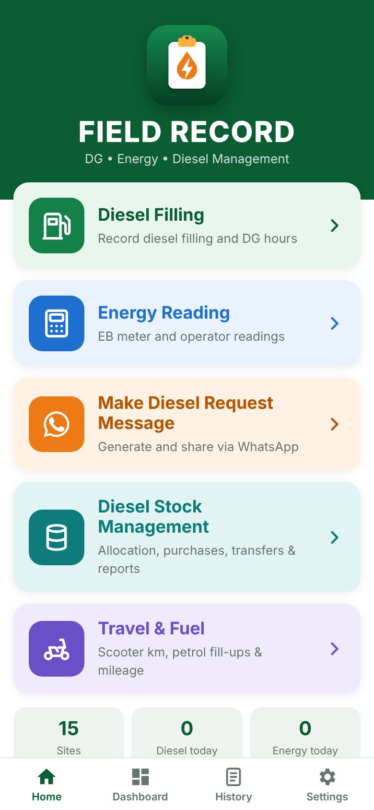
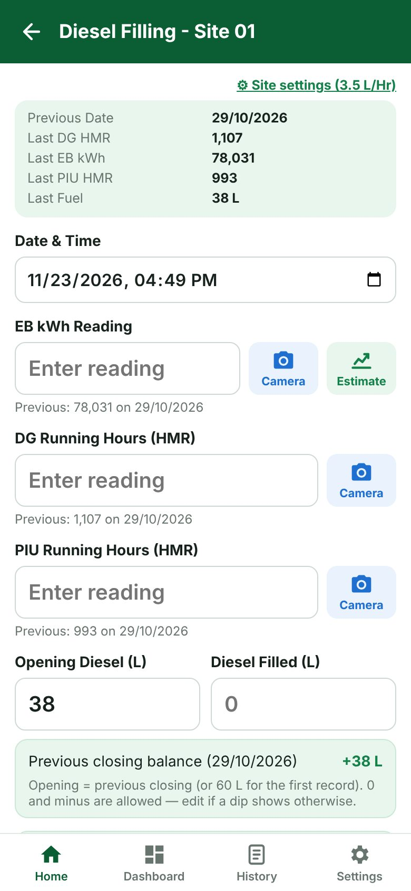
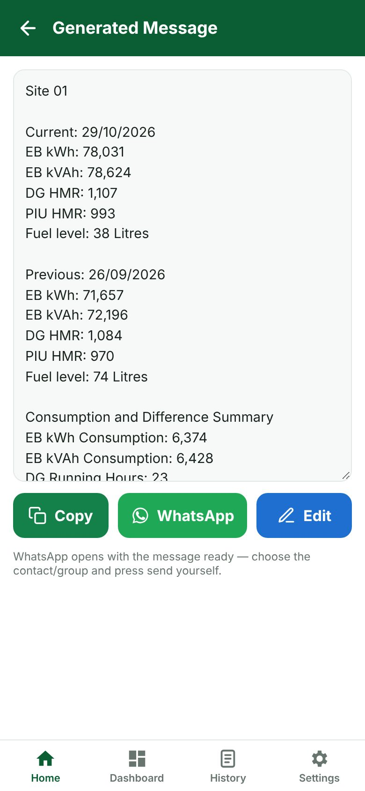
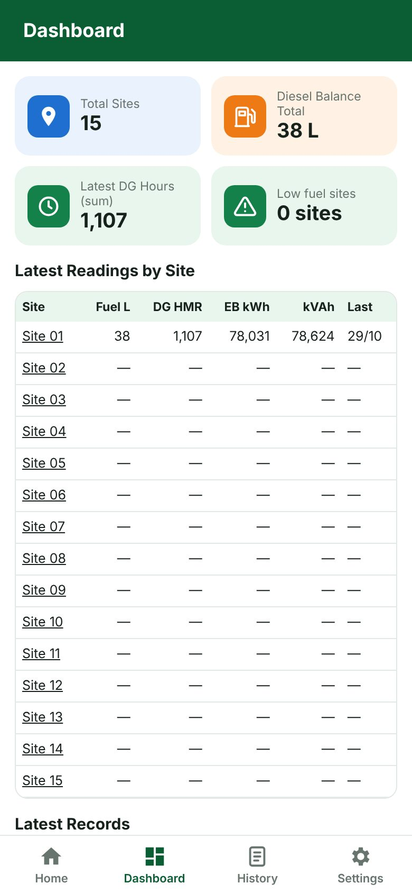

Field Record: diesel and energy logging for tower sites
A phone app built for a client who looks after telecom tower sites. It records diesel filling and energy readings at 15 sites and writes the diesel request message, ready to send on WhatsApp.
The problem
Each site needs regular records: the diesel filled, the generator running hours, the electricity meter readings and the readings for each operator. These were noted by hand or in phone messages. At the end of the period, the diesel request had to be worked out by comparing today's readings with readings from weeks earlier, then typed out as a message. It took time, and one wrong number meant the wrong amount of diesel.
What we built
- Diesel filling entry. Pick a site, enter the readings and the diesel filled. The app carries over the last closing balance and works out the new one from the running hours.
- Energy readings for the electricity meter and each operator, kept together and saved in one tap.
- Diesel request message. The app compares the latest readings with the readings from about 30 days earlier, works out the diesel needed, and prepares the message. One tap opens it in WhatsApp.
- Meter photo reading. A photo of the meter can fill in the digits. The user always checks the number before using it.
- Clear marking of estimates. If a reading is estimated, it is shown in orange and marked in the message, so nobody mistakes it for a real reading.
- Safety checks. A warning for a negative balance, and a question before a duplicate record replaces an old one.
- Dashboard, history and Excel export for all 15 sites.
- Works without network. It saves on the phone and syncs when the signal returns. It installs on the home screen like a normal app.
- Fuel and travel log for the client's own scooter, with distance and petrol used.




Screens above use sample readings and generic site names, not the client's real records.
Delivered
The app was built in November 2026 around the way the client already records and reports.
Need a simple app for your field work?
If your team records readings, visits, deliveries or collections on paper or in WhatsApp, we can build an app around it. You can talk to us in Tamil or English.
Talk on WhatsApp